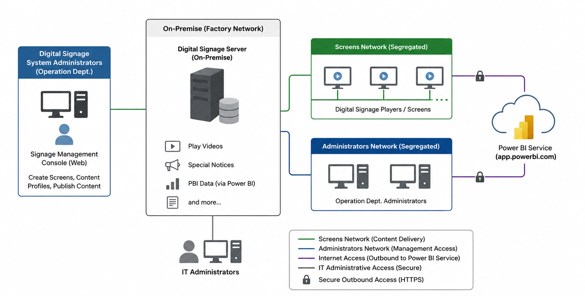

Screen Management
Centralized creation, configuration, and administration of factory display screens.
Completed Project
The Digital Signage System was implemented to provide a centralized platform for displaying operational and production information across factory screens. The completed solution supports Power BI dashboards, production and operations data, videos, special notices, announcements, and other digital content from a centrally managed platform.
Cloud Integration: Microsoft Power BI Service (app.powerbi.com).
The solution used an on-premises Digital Signage Server connected to the internal server network. Management access and screen traffic were segregated to reduce unnecessary access between administrative devices and playback endpoints. The management console was restricted to authorized Operations Department Signage Administrators and IT Administrators.
The original project architecture diagram is displayed below without recreating or simplifying the design.

Figure 1. Completed Digital Signage System architecture
The Digital Signage Server was deployed within the factory/server network and provided centralized content and screen management.
Screen/playback traffic and administrator management traffic were separated into distinct network paths.
The signage server and screens were allowed secure outbound connectivity to Microsoft Power BI for report display.
| Requirement | Completed Implementation |
|---|---|
| Visualize operational and production data | Factory screens were configured to display production and operational information through the centralized signage platform. |
| Display multiple content types | The system supported videos, special notices, announcements, Power BI dashboards, and other digital content. |
| Centralized screen management | Authorized administrators were able to create and manage screens from the Digital Signage Management Console. |
| Content profiles and publishing | Administrators were able to create content profiles/playlists, assign content, schedule content, and publish updates centrally. |
| On-premises deployment | The Digital Signage Server was installed on premises and connected to the server network. |
| Network segregation | Connections were segregated between the Screens Network and the Signage Administrator Network. |
| Restricted management access | Management console access was limited to authorized Operations Department Signage Administrators and IT Administrators. |
| Power BI integration | The Digital Signage Server and screens were allowed controlled outbound access to app.powerbi.com and required Microsoft Power BI services. |
Centralized creation, configuration, and administration of factory display screens.
Central management of videos, notices, operational content, and other supported media.
Reusable content profiles/playlists were created and assigned to selected screens or groups.
Authorized administrators were able to schedule and publish content centrally.
Factory screens were enabled to display Power BI reports using approved cloud connectivity.
The Digital Signage System implementation was completed with the on-premises signage platform, segregated screen and administrative connectivity, restricted management access, centralized content publishing, and Power BI integration in place.
The completed solution provided Operations and IT with a controlled and scalable method for managing factory-facing digital content while maintaining separation between administrative access and playback devices.
Implementation Status: COMPLETED
Core infrastructure, access segregation, content management, screen publishing, and Power BI connectivity were implemented.
Digital Signage System Implementation